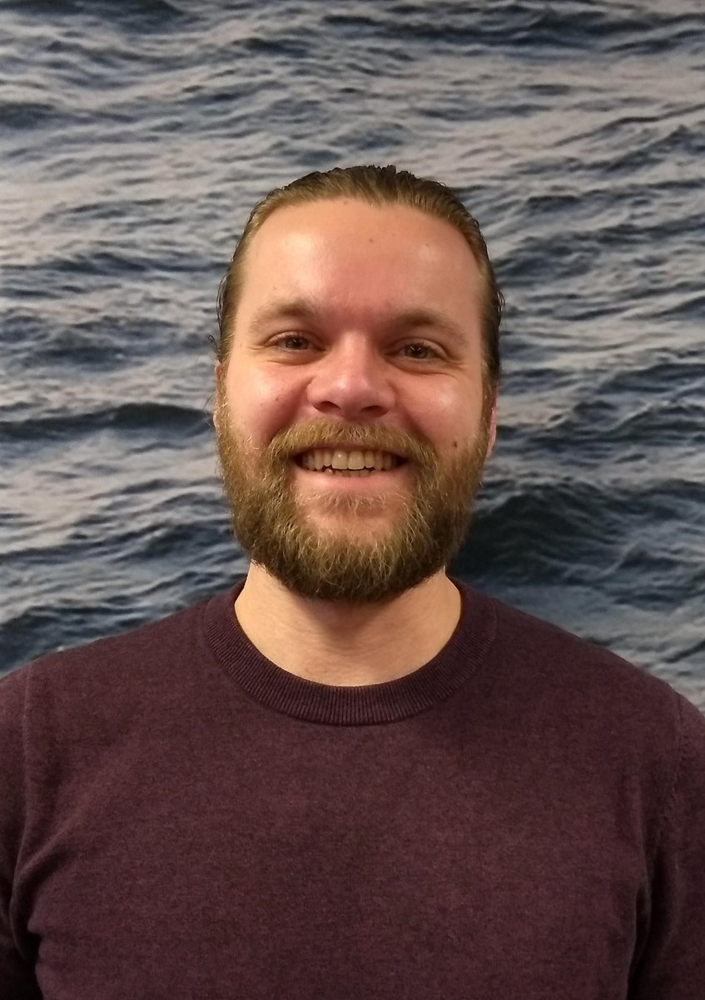
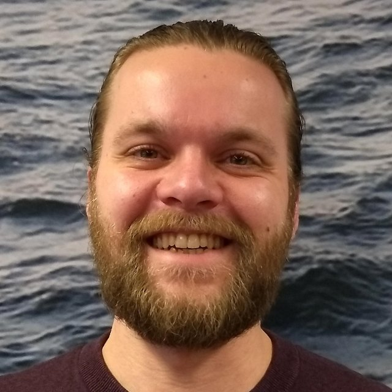

Aangenaam,
ik ben Remi.
Harde werker, leergierig van aard en graag onderdeel van een team. Vader van twee, vrijwilliger in Sevenum en al mijn hele leven een fervent lezer.
Wie ik ben
Ik ben een harde werker die zowel zelfstandig als in teamverband goed uit de voeten kan — en juist die afwisseling vind ik prettig. Ik ben ontzettend leergierig en pak nieuwe zaken snel op. Nieuwe onderwerpen, tools en ontwikkelingen zie ik niet als een drempel, maar als een kans om te groeien en anderen mee te nemen.
Wat me drijft
Mensen iets leren geeft me energie. Of het nu gaat om het inwerken van een nieuwe collega of het uitleggen van een digitale toepassing: ik word blij van dat moment waarop het kwartje valt. Daarnaast haal ik voldoening uit het verbeteren van processen — dingen net iets slimmer, duidelijker en beter maken dan ze waren.
Betrokken in Sevenum
Ik ben een actief vrijwilliger in Sevenum. Bij OJC Walhalla heb ik altijd vrijwilligerswerk gedaan en geruime tijd in het bestuur gezeten. Ook help ik graag mee bij evenementen in het dorp. Jarenlang was ik actief bij voetbalclub Sparta '18; sinds de komst van mijn kinderen is daar even wat minder tijd voor — maar mochten zij later gaan voetballen, dan sta ik graag weer klaar voor de club.
Boeken en de bibliotheek
Lezen is een rode draad in mijn leven. Niet voor niets koos ik voor de studie Literatuurwetenschap. Nog altijd kom ik minstens eens per twee weken met mijn kinderen in de bibliotheek in Horst om samen boeken uit te zoeken. Die plek — laagdrempelig, verbindend en volop in ontwikkeling — is precies waar ik graag aan bij wil dragen.

In het kort
- WoonplaatsSevenum
- WerkgebiedBij voorkeur op fietsafstand
- GezinVader van twee
- TalenNL · EN · DE
- OpleidingUniversiteit Utrecht
Hobby's & interesses
"Ik wil mijn expertise inbrengen in een team dat kwaliteit en voortdurende verbetering hoog in het vaandel heeft staan."
Laten we kennismaken
Benieuwd of we bij elkaar passen? Ik vertel graag persoonlijk meer over mijn motivatie en plannen voor het digitale domein.